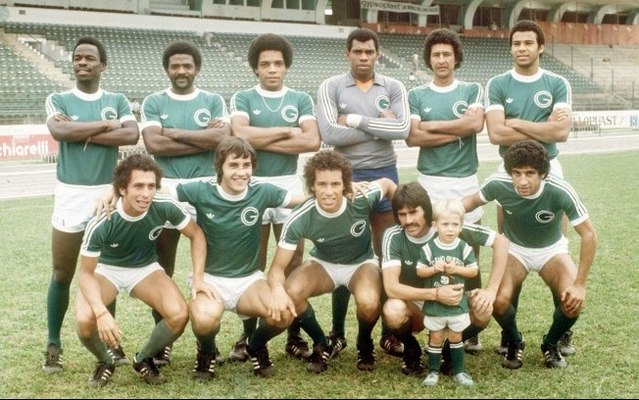
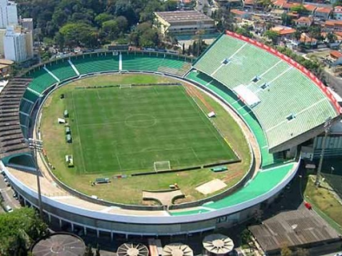

História do Guarani FC
Fundado em 1911, o Guarani Futebol Clube é uma das maiores equipes do futebol paulista, com uma rica história e uma torcida apaixonada. Acompanhe os principais momentos da nossa trajetória.

Campeonato Brasileiro de 1978
O Guarani FC conquistou seu primeiro e único Campeonato Brasileiro, derrotando o Palmeiras na final. Uma vitória histórica para a cidade de Campinas!
Leia mais sobre a conquista

O Estádio Brinco de Ouro
O Estádio Brinco de Ouro é o templo sagrado do Bugre, e a casa da torcida apaixonada do Guarani. Confira sua história e os jogos mais emocionantes.
Veja mais sobre o estádio
A Torcida do Guarani
A Torcida Guarani é uma das mais apaixonadas e fiéis do Brasil. Com muita energia, o Bugre se fortalece a cada partida com o apoio incondicional dos seus torcedores.
Conheça a história da torcida